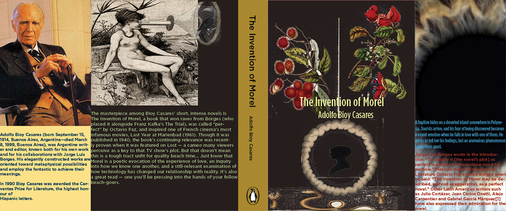

NEW YORK FLAG REDISGN: Redesigning all 5 of New York City’s borough flags with a series of color schemes (up to 4 colors for each flag) that represent each borough..

BOOK COVER: Designing a book jacket for the “ The invention of Morel" by Adolfo Bioy Casares

BOOK COVER: A 4 level library with many different spaces